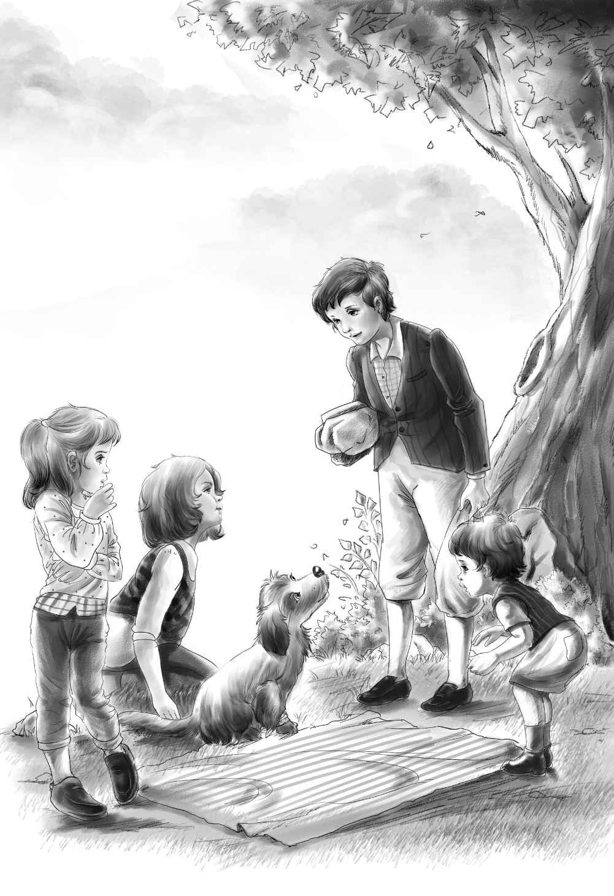

Henry Has Two Surprises
杰西轻轻地说：“别出声！”
三个孩子谁都没说话，只是静悄悄地坐在棚车里，观察着灌木丛。
“那里应该藏着只小熊吧！”班尼想。
果不其然，不一会儿，树丛后真的出现了一只小动物——不过不是小熊，而是一只小狗。小狗瘸着条腿儿，一蹦一跳地走了过来，它举起前爪，轻声呻吟着。
“大家别怕，”杰西说，“不过是只小狗狗罢了，看样子它受伤了。”
小狗抬起头，看到孩子们，摇起了尾巴。
“可怜的小狗狗，”杰西说，“你迷路了吗？过来，让我看看你的爪子。”
小狗一蹦一蹦地来到棚车旁，三个孩子都从棚车里跳了下来。
杰西仔细检查了一下它的前爪：“天哪，小可怜，原来你的脚上扎了一根大刺！”
小狗停止了呻吟，它抬起头看着杰西。
“乖狗狗，”杰西说，“我能帮你，不过可能会有点疼。”
小狗盯着杰西，摇了摇尾巴。
“维莉，”杰西指挥道，“把我的手帕拿到溪水里打湿。”
杰西坐在树墩上，将小狗抱到膝盖上，她先是拍了拍小狗的脑袋，喂它吃了一小块面包，然后就开始拔起刺来。刺很长，但小狗愣是一声也没吭。杰西费了好大的劲，终于把刺拔了出来。
这时，维莉也准备好了湿手帕。杰西把手帕裹在小狗的爪子上，小狗又抬起头看着她，摇了摇尾巴。
“它想说‘谢谢’，杰西！”维莉兴奋地叫道，“刚才它一声也没吭，真的很乖呢！”
“确实是个小乖乖，”杰西说，“我还是抱着它吧，让它的伤腿能休息一会儿。”
“我们有了只小宠物，亨利肯定会很惊喜的！”班尼高兴地说。
“的确是个大惊喜！”杰西说，“不过不是我刚才说的惊喜——我打算摘些蓝莓来当晚餐。”
“那你抱着狗狗，我们去找蓝莓吧！”维莉说。
“好的，你们去采吧，”杰西说，“蓝莓就在那边的几棵大树下。”
班尼和维莉开心地跑了过去。
“哇噢，杰西！”班尼激动地叫道，“你肯定没见过这么多蓝莓！至少有五个！不，我猜有十个！”
杰西笑了起来：“肯定不止那么几个。班尼，把摘下来的蓝莓放到干净毛巾里。”
两个小家伙开始兴致勃勃地摘起了蓝莓，杰西坐在一边，静静地观赏着这美好的画面。
“班尼摘的蓝莓大部分都进了他自己的嘴里呢！”杰西想着，忍不住笑了，“这样也好，起码在亨利带回牛奶前，他不用挨饿了。”
杰西抱起小狗，走到弟弟和妹妹身边，坐了下来。她把狗狗放在膝盖上，也帮忙摘起了蓝莓。很快，毛巾上就堆满了蓝莓。
“要是有盘子该多好啊，”杰西说，“那样我们就能把蓝莓拌到牛奶里吃了。”
“没关系！”维莉说，“等亨利回来，我们就着蓝莓喝牛奶，感觉是一样的啊！”
终于，亨利带着两大包东西回来了，一个纸包里放着四瓶牛奶，另一个纸包里有一条全麦面包和一些上好的黄色奶酪。
他一眼就看到了小狗狗。
“你们从哪儿找来一只这么可爱的小狗？”他惊讶地问。
“是它自己跑来的。”班尼抢着说，“它就是我们给你准备的惊喜。”
亨利走到小狗身边，它朝他摇了摇尾巴。亨利拍了拍小狗：“它应该能当一只很好的看门狗。咦，它的脚上怎么裹着手帕？”
“小狗被刺扎伤了，”维莉说，“是杰西帮它拔了出来，裹上了手帕。虽然很疼，可它一点也没哭闹。”
“它叫望望。”班尼补充道。
“哈，你什么时候给它取的名儿？”杰西笑着问，“不过，这个名字听起来倒是挺适合看门小狗狗的。”

“你买牛奶了吗？”饥肠辘辘的班尼盯着瓶子问道。
“当然买了！”亨利说，“整整四大瓶呢！”
“可怜的班尼，”杰西说，“我们这就吃大餐——这算晚餐吗？”
“当然算！”亨利肯定地说，“因为我们马上就得睡觉了。”
“从明天开始，我们就可以按时正常吃饭了。”杰西说。
说完，她有条不紊地把洗衣袋铺到松针上当桌布，接着把全麦面包切成五大块，将奶酪切成四块。
“小狗狗不喜欢吃奶酪！”班尼饿坏了，他兴奋地瞅着面包和奶酪。
维莉把四瓶牛奶放到桌子上，杰西则将蓝莓和奶酪摆好。
“居然有蓝莓？”亨利惊呼道，“杰西，你们给了我两个惊喜！”
“不过很遗憾，我们没有杯子，”杰西说，“只能抱着牛奶瓶子喝了。来，大家都坐下吧！”
晚餐开始了。“瞧，班尼，”亨利说，“你要像这样，先吃一颗蓝莓，再咬一口全麦面包，然后吃点儿奶酪，最后再喝牛奶。”
“好的！”刚说完，班尼便迫不及待地往嘴里塞了一颗大大的蓝莓。
小狗也共进了晚餐——它趴在地上，紧挨着杰西。杰西先是给它喂了点儿面包，又掬了些牛奶给它喝。
晚餐过后，每个瓶子里都剩了些牛奶。
“剩下的牛奶就当明天的早餐吧！”杰西说，“今天晚上咱们不用再露营啦！大家赶紧去找点儿松针来，在棚车里铺四张床吧！”
不一会儿，孩子们就抱来一大堆松针。亨利跳进棚车里，杰西给他递上松针，他很快就在车厢的一头铺了四张床。
“这边就作为我们的卧室。”杰西说。
“那另一边做什么呢？”班尼问。
“另一边？”杰西说，“让我想想——它既可以当起居室，又可以用作厨房。”
接着，她大声提议道：“现在我们该去小溪里洗刷刷啦！”她拿出肥皂，向小溪走去。
“班尼，这会很好玩呢！”维莉知道班尼不喜欢洗脸，只好哄着他说，“我们学小棕熊，把‘爪子’伸到小溪里玩水吧！”
孩子们热坏了，都迫不及待地想跳进清凉的小溪里洗个痛快。班尼学着哥哥和姐姐的样子，把凉水扑到脸上，用肥皂洗干净以后，再用毛巾擦干。
“我们还得扯一根绳子来晾毛巾。”杰西说。
说着她把洗衣袋上的绳子抽出来，一头绑在树上，另一头系到棚车上。这样，一根晾衣绳就做好了。她和维莉各洗了一条毛巾，搭到了晾衣绳上。
“这才像家的样子啊！”亨利赞道，“洗得可真痛快！”说完他开心地笑了起来。
杰西却是一副若有所思的样子。
“睡觉之前咱们还得去打点水喝，”她说，“可是用什么来盛水呢？”
“这个简单！把剩下的牛奶汇到两个瓶子里，”亨利说，“这样我们就可以腾出两个空瓶子去装水了！”
“好主意！”杰西赞道，“亨利，你一个人去喷泉接水吧！这样不容易被发现，要是有人来了，你就赶紧躲起来。”
亨利悄悄地出发了。不久，他就带回满满两瓶和白天一样清凉甘甜的水。班尼刚喝了几口，就睡意蒙眬了。
三个孩子将班尼抱进棚车里，杰西把小狗也抱了进去，小狗乖乖地趴在她身边。
“太热了！我们开着门睡好了！”亨利建议道。
很快，他们就进入了沉沉的梦乡。小狗和孩子们都睡熟了。月亮悄悄爬上夜空，可他们谁都没有看到，因为这是四天以来他们头一次在晚上睡觉。